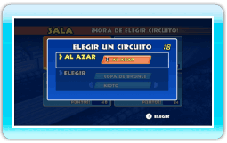
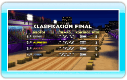

17 |
Cómo jugar con cualquiera |
|
El modo Con cualquiera te permite competir contra cualquier piloto del mundo mediante la Conexión Wi-Fi de Nintendo.
 Pulsa Pulsa  en la pantalla de la sala para seleccionar el diseño de tu moto y pulsa en la pantalla de la sala para seleccionar el diseño de tu moto y pulsa  para confirmar tu elección. Si decides no competir, pulsa para confirmar tu elección. Si decides no competir, pulsa
 para acceder al menú de opciones de sala y, a continuación, selecciona DESCONECTAR. para acceder al menú de opciones de sala y, a continuación, selecciona DESCONECTAR.
Selecciona un circuito que hayas desbloqueado en el modo Campeonato o selecciona AL AZAR. Cuando todos los pilotos hayan seleccionado un circuito, se elegirá uno de esos circuitos al azar.
Al finalizar la carrera, recibirás puntos del modo Con cualquiera en relación con la posición que alcances en la clasificación final. ¡Trata de conseguir los puntos necesarios para desbloquear diseños exclusivos para tu moto!
|
 |
 |
 |